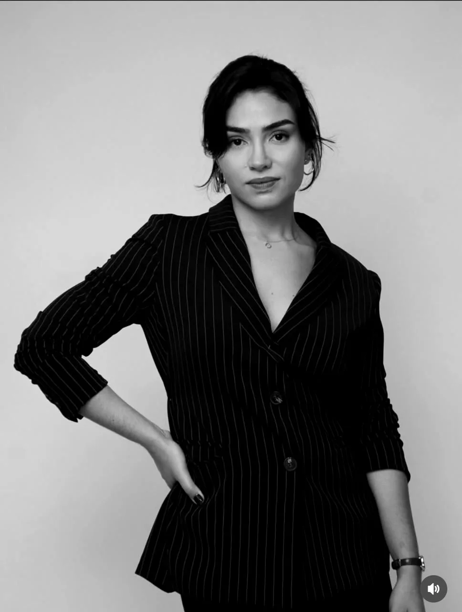
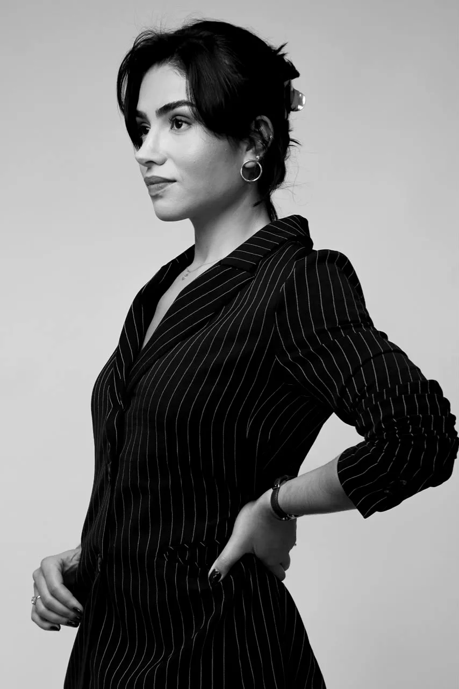

Rua Tuiuti, 504, Centro, Indaiatuba/SP
Direito empresarial
para quem empreende
em Indaiatuba.
Sociedade, contratos e relações de trabalho, com olhar de quem também estudou gestão. Presencial em Indaiatuba e on-line para todo o Brasil.
Falar pelo WhatsApp
Toda empresa começa num acordo entre pessoas. O contrato social, o acordo de sócios e os contratos com clientes e fornecedores deixam esse acordo claro desde o início, enquanto ele ainda é uma conversa.
Por isso o trabalho começa pela empresa inteira: quem são os sócios, como a equipe se organiza, como o negócio funciona. Os documentos vêm depois, e vêm sob medida.Onde a Dra. Bruna atua
Consultoria para empresas que estão nascendo, crescendo ou mudando de formato, e para quem ainda está tirando o negócio do papel.
- Questões societáriasConstituição de empresas, contrato social e suas alterações, acordo de sócios e reorganizações societárias.
- Contratos empresariaisElaboração e revisão de contratos com clientes, fornecedores e parceiros, franquias, acordos de confidencialidade e apoio em negociações.
- Trabalhista para empresasAdequação à legislação, contratos de trabalho, políticas internas, prevenção de passivos e defesa em ações trabalhistas.
- Contratos imobiliáriosContratos de compra, venda e locação ligados à empresa ou ao patrimônio dos sócios.
- Mentoria para empreenderPara quem está abrindo o primeiro negócio: planejamento, primeiros passos jurídicos e os erros mais comuns do começo.
Método 3Cs
Um trabalho de 3 a 4 meses, presencial ou on-line, para empresas que precisam alinhar os sócios, organizar a casa e firmar a base jurídica. Em três partes:
-
1
O sócio no centro da estratégia
Entender o perfil e as forças de cada sócio e colocar cada um na função em que rende mais. A empresa reflete quem está no comando.
-
2
A empresa com estrutura e direção
Uma leitura da empresa de ponta a ponta: processos, equipe, comunicação e cultura, para ver onde o negócio trava e por quê.
-
3
A base jurídica que sustenta tudo
Revisão dos contratos, da estrutura societária e das obrigações legais, para que o que foi organizado nas duas primeiras partes fique de pé no papel.

Quem atende
Bruna Couto é advogada e atua na área jurídica desde 2015, com foco em direito empresarial e contratos.
Além do Direito, tem formação técnica em Administração e experiência com gestão de riscos. Estuda comportamento humano, e isso aparece no atendimento: antes dos papéis, ela olha para os sócios, a equipe e o jeito como a empresa funciona.
- Na área jurídica
- desde 2015
- Formação técnica
- Administração
- Atendimento
- presencial e on-line
Como funciona
o atendimento
Do primeiro contato ao acompanhamento, sempre com a mesma advogada.
- 1
A primeira mensagem
Pelo WhatsApp ou por e-mail, conte em poucas linhas o momento da empresa.
- 2
Uma conversa
Presencial em Indaiatuba ou por vídeo, para entender o negócio, os sócios e o que precisa ser resolvido.
- 3
O escopo por escrito
Você recebe a proposta de trabalho: o que será feito, em que ordem e em quanto tempo.
- 4
Acompanhamento
Contratos, alterações e dúvidas do dia a dia seguem com quem já conhece a empresa.
O que separar para
a primeira conversa
- Contrato social e as últimas alterações
- Acordo de sócios, se houver
- Contratos em vigor com clientes, fornecedores e parceiros
- Modelo de contrato de trabalho e regras internas
- Cartão do CNPJ
- Uma lista com as suas dúvidas

O escritório
Segunda a sexta
das 9h às 17h
Atendimento por vídeo para empresas de todo o Brasil.
Perguntas
frequentes
Preciso estar em Indaiatuba para ser atendido?
Não. O atendimento é presencial em Indaiatuba, Campinas e região, e on-line para empresas de todo o Brasil.
Ainda não abri a empresa. Já faz sentido conversar?
Faz. A mentoria para quem está começando trata do planejamento do novo negócio e dos primeiros passos jurídicos, em encontros avulsos ou num programa de 3 a 4 meses.
O que é o Método 3Cs?
É um trabalho de 3 a 4 meses, presencial ou on-line, que olha para os sócios, para a organização da empresa e para a base jurídica do negócio: contratos, estrutura societária e obrigações legais.
A Dra. Bruna atua em questões trabalhistas?
Sim, do lado da empresa: adequação à legislação, contratos de trabalho, políticas internas, prevenção de passivos e defesa em ações trabalhistas.
Como marco o primeiro atendimento?
Pelo WhatsApp (19) 98990-2329 ou pelo e-mail contato@advbrunacouto.com.br, de segunda a sexta, das 9h às 17h.